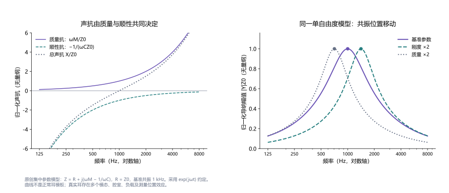
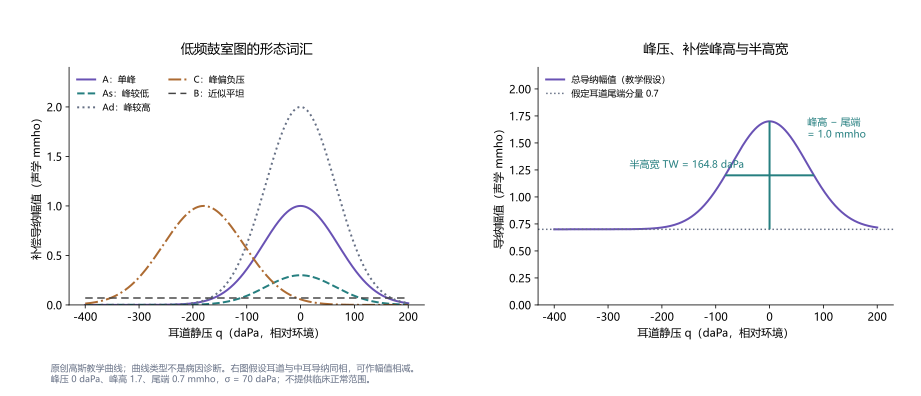
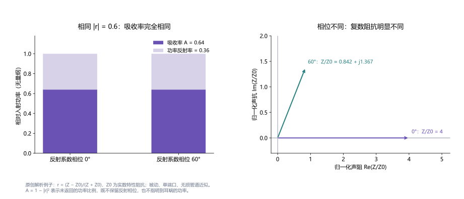

声导抗与鼓室测量
Acoustic Immittance and Tympanometry
声导抗描述声压与体积速度的关系，鼓室测量记录这一关系随耳道静压的变化。理解鼓室图、宽带吸收率和声反射，需要区分耳道与中耳分量、测量平面、频率及压力条件，并结合年龄、校准、耳镜与测听解释结果。
声导抗与鼓室测量（Acoustic Immittance and Tympanometry）是利用耳道内声学响应评估外耳与中耳机械状态的一组概念和方法。声导抗是声阻抗与声导纳的统称；鼓室测量是在改变耳道静压时记录声导抗，所得曲线称为鼓室图。检查通常无需听者作出行为回答，但它测量的是声学输入关系，不能直接替代听阈或言语能力测量。12
传统226 Hz鼓室图提供低频、压力相关的机械信息；1000 Hz测量、多频鼓室测量和宽带声导抗则从不同角度扩展这一观察。声反射通过激发中耳肌收缩，观察声学响应随时间的变化，具有另一套刺激条件与解释范围。理解这些结果，需要明确频率、压力、探头位置、年龄及校准方式。3
本词条围绕测量原理、计算、研究范式和结果解释展开。四幅图均为原创教学曲线或解析模型，不含患者数据；数值例子不作为临床正常范围、诊断界值或设备设置建议。文献访问范围列于页末，较新的研究与现行操作文件分别注明出版年和修订日期。
1. 声阻抗、声导纳与复数分量
在一个明确的测量平面，设 为截面平均的复数有效值声压，单位Pa， 为通过该截面的复数体积速度，单位m³/s。定义：
的SI单位为Pa·s/m³， 为m³/(Pa·s)。体积速度是单位时间通过截面的体积振动量，与单位m/s的质点速度不同；若采用 ，得到的是比声阻抗，单位也不同。本文涉及耳道端口时统一使用 ，避免与空气的比特性阻抗 混用。1
声压与流动存在相位关系，因此阻抗通常不是一个实数。用 时间约定，可写为 、。 为声阻， 为声抗； 为声导， 为声纳。导纳幅值 ，相位由实、虚部共同决定。由于倒数作用于整个复数，、，不能分别写成 、。
传统仪器常以声学mmho显示导纳，1声学mmho对应 m³/(Pa·s)。这是一种历史声学单位，不是电导单位的直接套用。某些报告使用mL或cm³表示“等效空气容积”；它是通过声学关系转换的数值，需要指定探测频率和近似条件。1
“静态声导纳”中的静态指耳道静压固定等测试条件，不是用零频率声音测量。在226 Hz探测音下，它仍然描述226 Hz声学振动的响应。术语中的静压、探测音声压级和声学相位，分别属于不同变量。
2. 质量、顺性与阻力：模型能够解释的频率趋势
一个单自由度集中参数模型可写为：
为声学惯性，单位kg/m⁴； 为声学顺性，单位m³/Pa； 是声阻。质量抗随频率增加，顺性抗的绝对值随频率降低而增大。低于模型共振频率时，顺性相关声抗常占优势；高于它时，质量相关声抗常占优势；二者在 抵消。刚度与顺性互为对应概念，刚度增加意味着顺性减小。4
若保持质量与声阻不变，把刚度加倍，共振频率成为原来的 倍；保持顺性不变，把质量加倍，则成为原来的 。图1以1 kHz为教学基准，得到约1.414和0.707 kHz。这是模型计算，不是对某种疾病的定量预测。


真实中耳包含鼓膜不同部位、听骨关节、韧带、含气腔室与耳蜗负载，存在多个耦合模态。某个导纳峰、吸收率峰或相位零点，可以帮助描述响应，但它们未必都对应同一个“中耳共振”。参数拟合还可能存在多种等效解，不能把一个峰位唯一归因于某块听骨质量或某条韧带刚度。
声学功率同样需要复数关系。使用有效值约定时，平均输入功率为 。在固定声压、同一平面和有效模型条件下，功率与导纳实部相关，不能只凭导纳幅值变大就判定更多能量进入耳蜗。输入到端口的功率还可能在系统内部耗散，输出传声需要另外的测量或模型。3
3. 仪器、压力扫描与校准
鼓室测量探头一般包含声源、麦克风和压力通道，通过耳塞与耳道耦合。声源发出探测信号，麦克风记录耳道声压，压力系统改变探头与鼓膜之间的静压。仪器结合已校准的声源特性推算声导抗，并非在耳道中直接插入一个“速度传感器”。宽带方法可使用多个已知负载估计声源等效参数，测得的声压与这些参数共同决定输入阻抗。15
横轴耳道静压通常以daPa表示，相对于检查环境的气压，1 daPa=10 Pa。−150 daPa意味着耳道静压比环境低1500 Pa，不能与声音的dB SPL混为一谈。探测频率、探测声级、压力起止、扫描方向和扫描速度需记录；不同速度可能影响峰位、形态和稳定性。研究中的压力范围是协议的一部分，不能自动作为所有耳的操作范围。
BSA的2024年建议在2026年3月作了小修订。它强调依据耳镜、病史与个体情况选择测试；近期耳手术、流液、疼痛或明显异常等条件需另行判断。异常结果应检查探头通道、耳塞和佩戴后重测，而不是只接受机器给出的分类。声反射测试也需要在相应鼓室测量与适用条件评估之后开展。2
标准腔体用于检查系统能否测得已知声学负载，不能替代耳内质量控制。宽带校准还受声源稳定性、管道共振、探头声学串扰及已知腔体模型影响。Voss与Allen的原始研究使用校准控制比较成人耳道输入阻抗与反射率，说明这些量是可以关联但具有各自测量条件的指标。5
耳塞漏气不仅使压力无法建立，还可能改变环境压力下的宽带结果。Groon等通过在耳塞中加入细管模拟漏气，先测刚性腔体，再测21名成人耳道，发现低频吸收率随漏气增加，高频影响更难预测。11 因此，低频吸收率升高可能是耦合伪迹，不能一律解释为中耳传声改善；研究提出的漏气判据还需保留频带、年龄和设备条件。
4. 鼓室图指标、耳道补偿与等效容积
在成人低频近似下，可把探头处导纳看作耳道空气与鼓膜—中耳分量的组合。耳道内外压力差较大时，鼓膜和相连结构变得较僵硬，仪器用尾端响应估计耳道贡献；再从峰值条件中扣除它，得到补偿导纳。这是有条件的近似，极端压力下中耳贡献并不必然严格为零，婴儿耳道壁也不一定刚性。46
主要指标应明确如何定义：
| 指标 | 描述对象 | 解释条件 |
|---|---|---|
| 峰压TPP | 所选鼓室图极值对应的耳道静压 | 有明确峰时才可估计；是对中耳压的间接线索 |
| 补偿峰静态导纳 | 峰值条件扣除所选尾端贡献后的响应 | 需注明分量、频率、补偿方法和尾端压力 |
| 鼓室图宽度TW | 补偿峰高一半处左右压力的间隔 | 适用于可定义的单峰；宽峰或切迹需另说明 |
| 等效耳道容积ECV | 依据尾端声学响应换算的空气容积 | 不是影像学几何容积，受密闭、穿孔和模型影响 |
在刚性、密闭、尺寸远小于波长的空气腔中，声学顺性约为 ，导纳 。以 cm³、空气密度1.2 kg/m³、声速343 m/s、频率226 Hz计算，导纳幅值约 m³/(Pa·s)，接近1声学mmho。这解释了226 Hz下容积与导纳数值近似对应的便利，不能把1 kHz测得的导纳数值直接视为同样的mL。1


严格的复数补偿应先相减分量，再求幅值。教学例子取 、，单位均为声学mmho，差值为 ，幅值约1.044；如果先求幅值再相减，则为 。两者不同，是因为相位信息参与组合。图2的幅值相减特意假设同相；较高频率、导纳分量明显改变时，不宜沿用简单低频减法。
5. A、As、Ad、B和C：形态词汇与鉴别边界
传统低频鼓室图常以A表示环境压力附近的单峰，As表示峰较浅、Ad表示峰较高，B表示近似平坦，C表示峰向负压偏移。这些字母是形态描述的简写，解释还需要峰高、峰压、宽度、ECV、年龄及其他检查。它们不是一组与疾病一一对应的标签，也不应直接套用到1000 Hz或所有宽带图。1
峰较低可以提示较僵硬的输入响应，但不能仅据此确诊耳硬化；峰较高可以见于鼓膜局部松弛或某些听骨链改变，但不能单独证明听骨链断裂。A型也不能排除听力损失：输入机械关系相对常见，仍可能存在耳蜗或神经层面的损伤，也可能漏掉某些传导性问题。
平坦曲线的解释尤其依赖ECV。ECV明显偏小时，应考虑探头贴壁或堵塞等测量问题；ECV符合相应年龄范围时，积液是重要候选解释；ECV偏大时，应结合耳镜检查开放穿孔或通畅置管等可能。这里的“偏大、偏小”需依据适合人群和仪器的资料，而不是一个全年龄统一阈值。平坦图没有可靠峰压时，应报告峰压无法确定，不把扫描中的最低或最高点强行称为中耳压。2
负压峰提供耳道外加压力与中耳机械状态的线索，可能伴随咽鼓管通气改变，但一次C型图不能单独确定持续性功能障碍或是否存在积液。压力补偿与宽带信息可以增加观察角度，病史、耳镜和随访仍重要。
Nakajima等在31名鼓膜完整且中耳含气的传导性听力损失成人中，将耳道反射率、脐部速度与测听结合，初步区分镫骨固定、听骨链中断与上半规管裂。它说明鉴别需要指标组合及清楚的入组条件，也提醒“有气骨导差”并不自动表示病变局限于鼓膜或听骨链。15
6. 婴幼儿：1000 Hz测量与发育中的耳道
小婴儿耳道较短、壁较柔软，外耳和中耳仍在发育。改变静压可能同时改变耳道壁的状态，使成人低频“刚性空气腔”的补偿假设失效。Keefe等在不同月龄婴儿与成人中测量输入阻抗及反射系数，显示耳道几何、壁振动和中耳特性共同影响响应，部分发育变化持续至较大月龄。6
BSA现行文件以矫正年龄区分探测频率：不足6个月采用1000 Hz，达到6个月及以上的常规测量采用226 Hz；具体条件仍由测试目的和专业判断决定。高频图的分量、补偿与形态规则需与相应协议一致，不能简单把成人226 Hz的“峰高正常值”平移过去。2
Margolis等2003年提供新生儿1 kHz鼓室测量资料，并考察与耳声发射筛查的关系。由于研究常模建立和评估涉及OAE通过条件，它支持特定新生儿样本的解释，不能代表所有有中耳或听力问题婴儿的诊断性能。7
Gellrich等2024年回顾性比较111名、217耳、≤12个月手术婴儿的226与1000 Hz结果，以鼓膜切开所见核对积液。在所用分类和亚组下，1000 Hz敏感度为97%—98%、特异度71%—84%；226 Hz敏感度43%—61%、特异度81%—97%。结果支持高频探测音的价值，尤其显示226 Hz可能在有积液时仍呈峰形；但手术人群、分类规则和积液特性限制了向普通筛查人群的推广。8
宽带也需要年龄常模。Hunter等纵向追踪通过新生儿筛查并获得后续正常听觉结果的婴儿，发现吸收率及群时延在前6个月有明显变化，较大的频谱变化不能直接当作疾病恢复。9 “客观测量”不等于“无需控制发育因素”。
7. 宽带反射率与吸收率：保留和丢失的信息
宽带声导抗（wideband acoustic immittance，WAI）是覆盖多个频率的相关测量统称；常见输出包括阻抗、导纳、声压反射系数、功率反射率、吸收率及相位或群时延。宽带鼓室测量（WBT）进一步改变耳道静压，形成频率—压力响应。环境压力WAI可以不作压力扫描，但它与WBT不是同一种协议。3
在单端口、线性、近似无损管道中，设 为实数特性阻抗， 为截面积，复数声压反射系数 。关系为：
为功率反射率， 为吸收率，均无量纲。写“1−反射率”时必须说明是功率反射率，不能把复数声压系数或其幅值直接相减。无损管道中传播主要改变反射相位，因此功率反射率对纵向测量位置较不敏感；真实耳道的壁损耗、截面变化、漏气及高频传播会限制这一性质。5


由 可知，反射相位参与阻抗计算。图3的两种负载吸收率相同，却有不同的声阻、声抗和导纳；只保留吸收率无法恢复全部复数信息。对于理想被动负载，吸收率在0与1之间；校准错误、噪声或模型不适用时可能出现越界值，应检查测量链，不能把它解释为特殊的“负吸收疾病”。
吸收率描述从观察端口看未返回的功率比例。成人密闭耳道下，它常用于估计进入鼓膜—中耳系统的功率；其中还涉及局部损耗，小婴儿可有耳道壁贡献。它不直接说明这些功率有多少到达镫骨、形成耳蜗两阶压差或被感觉细胞利用。
Rosowski等在正常听力成人中比较耳道反射率、鼓膜脐部速度和传统鼓室测量，发现它们的关联具有频率条件，不能互相直接替代。17 因此，吸收率曲线更接近常模不必然等于听阈、言语理解或助听器获益改善。
8. 压力—频率图与环境压力、峰压比较
WBT在多个静压点获取宽带响应，可用三维图或二维热图表示 。环境压力切片通常取 daPa，峰压切片则取设备或研究定义的TPP。需要说明峰压由226 Hz、指定宽带平均、哪种分量或哪一扫描方向确定；不同定义不保证相同，也不能假设每个频率的最大吸收率都在同一静压处。4
当中耳相对环境呈负压时，环境压力测量包含鼓膜两侧压差的附加机械影响。把耳道静压调整到所估峰压，可减小这一压差影响，帮助区分压力相关改变与仍然存在的其他机械异常。压力调整只是在测量时改变边界，不代表已经消除积液、修复组织或治疗咽鼓管功能。

图4在压差抵消点取基准刚度，在环境压力处刚度成为约1.444倍，使模型共振从1 kHz移至约1.202 kHz。这展示了切片差异的来源，不能据图反推出真实耳内压力、刚度或疾病。真实耳可以同时存在负压与其他病变，峰压条件的曲线仍可能异常。
Aithal等在健康儿童耳及不同程度负中耳压儿童耳中比较环境与峰压条件，发现WBA和瞬态诱发OAE在特定频段改善，关系受压力、频率及组别影响。12 Feeney等在33名正常听力成人中，采用环境压力及两个扫描方向、约一个月间隔的重测，显示常模、峰尾差及可靠性均需结合指标和条件解释。10
9. 诊断研究：参考标准、指标组合与准确率
评价新测量时，首先要明确目标是检测积液、区分不同机械病变，还是估计听力损失。参考标准也应对应问题：鼓膜切开和术中观察可核对积液或听骨状态，耳镜和气动耳镜提供另一类观察，听阈则是行为结果。用传统鼓室图自己作为标签训练模型，不能据此证明新方法已独立识别真正病因。
Ellison等比较年轻儿童环境压力宽带响应，使用吸收率、导纳幅值与相位组合预测积液状态，并与气动耳镜所见比较。组合指标较单一量提供更多信息，但人群、参照和分类构建方式仍是效能的一部分。13
Merchant等在疑似积液儿童术前测量WAI，以置管时所见将积液分为满、部分、当时已清除，并与健康对照比较。吸收率随积液量增加而降低，尤其在1—5 kHz；传统鼓室图没有同样的系统性量效关系。其分类模型及70%/30%数据划分显示有潜力，但同一小样本数据集内的划分不等于独立机构、不同设备和普通就诊人群的外部验证。14
Śliwa等2020年将90只手术确诊耳硬化耳与126名匹配正常听力对照比较，考察峰压宽带吸收率及其他指标；特定低频带吸收率的判别优于一些宽带平均量和传统指标。16 正常对照与确诊病例的差别，通常比临床中多种相似病变之间更容易区分，因此不宜把该研究性能直接当作任一患者的确诊概率。
教学计算可说明患病率的作用：假定某测试敏感度、特异度均为90%，在1000名患病率10%的受检者中，预期90名真阳性、90名假阳性，阳性预测值为50%；若患病率50%，则为450名真阳性、50名假阳性，阳性预测值90%。参数是纯教学假设。相同敏感度和特异度，并不产生相同阳性预测值。
宽带数据还有相关性问题：同一人两耳、同一耳多次随访、相邻频率都不是完全独立样本。训练与测试分组应按受试者或独立临床队列进行，避免把同一人的另一只耳或同一次测量的相邻频点放进“独立测试集”。应报告置信区间、无法测量比例及预先指定的判据，而不只展示最佳频段或最高准确率。
10. 声反射：激发音、探测信号与中耳肌反应
声反射检查将较强的激发音与测量用探测信号分开。激发音可引起双侧镫骨肌反应，改变声学输入关系；仪器在一个耳道监测声导抗或宽带响应随时间的变化。激发与探测在同一耳称同侧条件，在相反耳称对侧条件，报告应明确刺激耳和记录耳，而不只写“左侧反射”。18
环路涉及耳蜗换能、听神经、脑干中继、面神经运动通路及镫骨肌；探测耳和激发耳的传导状况都可影响结果。反射缺失可能涉及输入听不见、反射环路、输出机械响应或测量耦合等多种因素，不能仅凭一个缺失结果定位到某条神经。人类常规声学反射主要关注镫骨肌，鼓膜张肌相关反应的刺激条件与证据应另行说明。18
反射阈值是按指定反应判据能稳定测出改变的最低激发声级，不是听阈。阈值、增长函数、潜伏期与衰减各有测试条件；探测频率、激发频率/带宽、持续时间、压力位置和单位会影响比较。超过仪器上限仍未测到，应报告该上限下未检出，不把它当作已经精确知道的更高阈值。激发声级的dB HL、dB SPL和dB SL也不能直接混用。
宽带中耳肌反射（MEMR）测量多个频率的刺激前后差异，可能比单一226 Hz探测更敏感，但还需要验证重测稳定性。Bramhall等2025年在45名正常听力成人的两次测试中，使用对侧宽带噪声激发，发现重测差异随激发声级增加，部分人的频率响应或幅值也改变。这提示“测到较大改变”并不自动表示生理状态真实变化。20
噪声相关耳蜗突触损伤是研究中的一个方向。Trevino等综述指出，动物模型中宽带MEMR与突触损伤存在关联，人类研究结果更异质；病因、测量条件与个体差异难以严格控制。19 当前不能把某个声反射幅值直接当作人类突触数量、隐匿性听力损失或个人言语噪声困难的确诊指标。
11. 常模、随访与可复现报告
常模必须与年龄、设备、校准、频率处理、压力条件及数据有效性匹配。Voss等分析NHANES有效数据中的7029耳、4150名6—80岁受试者，显示社区环境下训练人员可获得与既往研究相近的吸收率与阻抗相位数据，也观察到年龄等组别差异。样本大有利于常模，但入组筛选、设备和年龄范围仍决定其适用边界。21
Zhao等2025年的年龄系统综述合并30项研究，支持年龄分层的重要性；不同研究的设备、处理方式和人群差异，意味着合并均值不能直接成为每台设备、每个频率的统一临床阈值。22 对多频曲线，还应区分逐频百分位与整条曲线的判据：正常个体出现少量超出逐频区间的点，不等于整个中耳必然异常。
纵向评估需分开探头重放误差、短时波动、发育变化和疾病变化。Keskin Yıldız等2025年对26名儿童、48耳作三个月积液随访，发现一些宽带频段的变化与耳镜检查改变相关，能够补充226 Hz测量遗漏的信息；它是小样本随访关联，不证明单靠WBA能决定治疗或保证预测恢复。23
研究或专业报告宜保存以下内容：
- 对象与条件。 年龄及必要的矫正年龄、耳侧、耳镜所见、置管或手术情况、测试时环境和配合状态。
- 仪器与采集。 设备和软件版本、探测与激发信号、校准日期和检查、压力范围/速度/方向、耳塞与重放情况。
- 原始响应与派生量。 完整曲线、复数分量或可用相位、补偿方式、TPP定义、ECV、宽度和无法可靠估计的指标。
- 质量与解释。 漏气、堵塞、噪声、越界值处理，所用常模及参照检查，重测一致性与证据范围。
临床推广还涉及培训和解释规则。Al-Salim等2024年的自愿调查纳入132名美国临床听力师，设备可及性与培训/解释信心是主要障碍；它提供实践背景，不能代表所有地区的使用率或验证某一诊断算法。24 研究下一步需要统一可靠性指标、独立人群验证，以及明确在既有耳镜与测听之外增加了多少信息。
进一步理解可联系声波与传播、耳蜗、信号检测论及听觉诱发电位。声导抗提供机械输入与反射的信息；听阈、神经反应和实际聆听能力需要相应的测量与证据共同解释。
参考文献与证据范围
- [1] TympanometryASHA Working Group on Aural Acoustic-Immittance Measurements (1988). ASHA Relevant Paper, historical tutorial.官方文档／讲义：已读术语、仪器、补偿与解释限制部分；历史教程，不作为现行设备标准。
- [2] Recommended Procedure: Tympanometry and Acoustic Reflex ThresholdsBritish Society of Audiology, Professional Guidance Group (2024（2026年3月小修订）). Official recommended procedure, also amended February 2025.官方文档／讲义：已读适用年龄、测量与报告、耳道容积、测试条件及宽带概览相关部分；保留原始出版年与修订日期。
- [3] Acoustic Immittance, Absorbance, and Reflectance in the Human Ear Canal.Rosowski JJ, Wilber LA. (2015). Semin Hear 36(1):11-28. DOI: 10.1055/s-0034-1396924.摘要核对：综述摘要；声导抗、吸收率、反射率和校准概览。
- [4] Fundamental Concepts for Assessment and Interpretation of Wideband Acoustic Immittance Measurements.AlMakadma H, Kei J, Yeager D, Feeney MP. (2023). Semin Hear 44(1):17-28. DOI: 10.1055/s-0043-1763293.已读全文相关部分：已读全文的阻抗、临床测量、宽带吸收率与压力切片相关部分；采用其概念框架，计算和图另行原创。
- [5] Measurement of acoustic impedance and reflectance in the human ear canal.Voss SE, Allen JB. (1994). J Acoust Soc Am 95(1):372-384. DOI: 10.1121/1.408329.摘要核对：原始研究摘要；复数声压反射系数、能量反射率与耳道输入阻抗的关系。
- [6] Ear-canal impedance and reflection coefficient in human infants and adults.Keefe DH, Bulen JC, Arehart KH, Burns EM. (1993). J Acoust Soc Am 94(5):2617-2638. DOI: 10.1121/1.407347.摘要核对：原始研究摘要；婴儿耳道壁、几何发育及输入阻抗与反射差异。
- [7] Tympanometry in newborn infants--1 kHz norms.Margolis RH, Bass-Ringdahl S, Hanks WD, Holte L, Zapala DA. (2003). J Am Acad Audiol 14(7):383-392. DOI: 10.1055/s-0040-1715757.摘要核对：原始研究摘要；新生儿1 kHz鼓室测量与OAE筛查条件相关的常模。
- [8] A Comparison of 226- and 1000-Hz Probe Tone Tympanometry With Myringotomy Findings in Infants.Gellrich D, Eder K, Echternach M, Gröger M, Huber P. (2024). Am J Audiol 33(4):1246-1256. DOI: 10.1044/2024_aja-24-00062.摘要核对：出版者及索引摘要；111名、217耳、≤12个月手术婴儿，226/1000 Hz与鼓膜切开所见的回顾性比较。
- [9] Longitudinal development of wideband reflectance tympanometry in normal and at-risk infants.Hunter LL, Keefe DH, Feeney MP, Fitzpatrick DF, Lin L. (2016). Hear Res 340:3-14. DOI: 10.1016/j.heares.2015.12.014.已读全文相关部分：原文可检索方法、结果及讨论相关部分；正常/高风险婴儿纵向测量中的年龄效应，不提取存在差异的总样本数。
- [10] Normative Wideband Reflectance, Equivalent Admittance at the Tympanic Membrane, and Acoustic Stapedius Reflex Threshold in Adults.Feeney MP, Keefe DH, Hunter LL, Fitzpatrick DF, Garinis AC, Putterman DB, McMillan GP. (2017). Ear Hear 38(3):e142-e160. DOI: 10.1097/aud.0000000000000399.摘要核对：原始研究摘要；33名正常听力成人，约一个月重测，环境压力及双方向扫描的常模和可靠性。
- [11] Air-leak effects on ear-canal acoustic absorbance.Groon KA, Rasetshwane DM, Kopun JG, Gorga MP, Neely ST. (2015). Ear Hear 36(1):155-163. DOI: 10.1097/aud.0000000000000077.已读全文相关部分：已读全文方法、结果及结论相关部分；人工漏气、刚性腔与21名成人的耳道测量。
- [12] Effect of Negative Middle Ear Pressure and Compensated Pressure on Wideband Absorbance and Otoacoustic Emissions in Children.Aithal S, Aithal V, Kei J, Manuel A. (2019). J Speech Lang Hear Res 62(9):3516-3530. DOI: 10.1044/2019_jslhr-h-18-0426.摘要核对：原始研究摘要；儿童负中耳压下环境/峰压WBA及TEOAE比较，改善有频率条件。
- [13] Wideband acoustic transfer functions predict middle-ear effusion.Ellison JC, Gorga M, Cohn E, Fitzpatrick D, Sanford CA, Keefe DH. (2012). Laryngoscope 122(4):887-894. DOI: 10.1002/lary.23182.摘要核对：原始诊断研究摘要；年轻儿童环境压力宽带响应与积液判断，不据标题推广。
- [14] Improving the Differential Diagnosis of Otitis Media With Effusion Using Wideband Acoustic Immittance.Merchant GR, Al-Salim S, Tempero RM, Fitzpatrick D, Neely ST. (2021). Ear Hear 42(5):1183-1194. DOI: 10.1097/aud.0000000000001037.摘要核对：原始研究摘要；儿童术前WAI与术中积液分类、同数据集内模型验证及传统鼓室图比较。
- [15] Comparison of ear-canal reflectance and umbo velocity in patients with conductive hearing loss: a preliminary study.Nakajima HH, Pisano DV, Roosli C, Hamade MA, Merchant GR, Mahfoud L, Halpin CF, Rosowski JJ, Merchant SN. (2012). Ear Hear 33(1):35-43. DOI: 10.1097/aud.0b013e31822ccba0.摘要核对：原始研究摘要；2012年发表，31名成人，鼓膜完整且中耳含气，反射率配合测听的初步鉴别研究。
- [16] Measurement of Wideband Absorbance as a Test for Otosclerosis.Śliwa L, Kochanek K, Jedrzejczak WW, Mrugała K, Skarżyński H. (2020). J Clin Med 9(6):E1908. DOI: 10.3390/jcm9061908.已读全文相关部分：已读全文结果及结论相关部分，并核对摘要；90只术证耳和126名匹配正常听力对照，峰压低频吸收率判别。
- [17] Ear-canal reflectance, umbo velocity, and tympanometry in normal-hearing adults.Rosowski JJ, Nakajima HH, Hamade MA, Mahfoud L, Merchant GR, Halpin CF, Merchant SN. (2012). Ear Hear 33(1). DOI: 10.1097/aud.0b013e31822ccb76.摘要核对：摘要核对；正常听力成人耳道反射率、脐部速度与鼓室图的频率相关性；沿用本次对话已核对记录。
- [18] Auditory brainstem circuits that mediate the middle ear muscle reflex.Mukerji S, Windsor AM, Lee DJ. (2010). Trends Amplif 14(3):170-191. DOI: 10.1177/1084713810381771.摘要核对：综述摘要；中耳肌反射的双侧反应、镫骨肌及脑干通路，不将所有中继细胞当作已确定。
- [19] The middle ear muscle reflex: Current and future role in assessing noise-induced cochlear damage.Trevino M, Zang A, Lobarinas E. (2023). J Acoust Soc Am 153(1):436. DOI: 10.1121/10.0016853.摘要核对：综述摘要；动物噪声突触损伤与宽带MEMR关联，人类结果异质性及应用限制。
- [20] Test-Retest Differences in the Wideband Middle Ear Muscle Reflex.Bramhall NF, Whittle NK, Feeney MP, McMillan GP. (2025). Am J Audiol 34(1):149-159. DOI: 10.1044/2024_aja-24-00110.摘要核对：原始研究摘要；2025年发表（DOI含2024），45名成人两次对侧宽带MEMR的重测差异。
- [21] Absorbance Measurements From Normal-hearing Ears in the National Health and Nutrition Examination Survey, 2015-2016 and 2017-2020.Sun J, Horton NJ, Voss SE. (2023). Ear Hear 44(5):1282-1288. DOI: 10.1097/aud.0000000000001358.摘要核对：原始研究摘要；7029耳、4150人、6—80岁NHANES正常听力及有效数据筛选，群体差异和社区测量。
- [22] Age effect on wideband absorbance in people with normal middle ear function: a systematic review.Zhao F, Suresh SC, Jones E, Cao Z, Zhang L, Wang J, Grais EM, Rajenderkumar D, Lauxmann M, Jiang W. (2025). Int J Audiol :1-21. DOI: 10.1080/14992027.2025.2590546.摘要核对：系统综述摘要；30项研究的年龄分层，未阅读全文及逐项重新提取数据。
- [23] A novel approach to the follow up of children with otitis media with effusion: wideband absorbance findings.Keskin Yıldız M, Atay G, Mergen EK, Aksoy S, Böke B. (2025). Eur Arch Otorhinolaryngol 282(9):4487-4496. DOI: 10.1007/s00405-025-09355-3.已读全文相关部分：已读全文方法、结果与结论相关部分；26名儿童48耳、三个月积液随访，WBA改变与耳镜所见的关联。
- [24] Survey of Wideband Acoustic Immittance Use by Clinical Audiologists.Al-Salim S, Skretta D, Merchant GR. (2024). Am J Audiol 33(1):254-268. DOI: 10.1044/2023_aja-23-00228.摘要核对：原始调查摘要；132名美国临床听力师，自愿调查中的设备、培训及解释信心障碍。